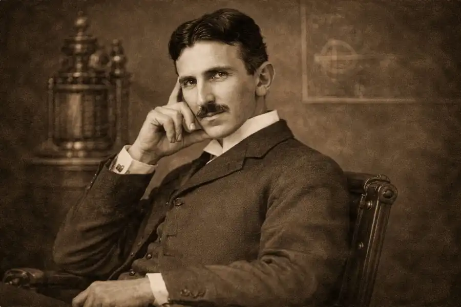

The Man Who Invented the Twentieth Century
Inventor · Electrical Engineer · Mechanical Engineer · Futurist

“The present is theirs; the future, for which I really worked, is mine.”— Nikola Tesla
With over 300 patents, Tesla's work laid the foundation for modern electricity, radio, and wireless communication.
The polyphase AC power transmission system that became the worldwide standard for electrical distribution, revolutionizing energy grids globally.
US Patent 381,968Pioneering patents and demonstrations of wireless radio transmission, predating Marconi. The Supreme Court ruled in Tesla's favor in 1943.
US Patent 645,576Resonant transformer producing high-voltage, high-frequency alternating current. Central to wireless communication and energy experiments.
US Patent 454,622The first practical AC induction motor, using a rotating magnetic field. Powers nearly every electric motor in use today.
US Patent 382,279Wardenclyffe Tower — Tesla's ambitious project for global wireless power transmission. The groundwork for modern wireless charging.
US Patent 1,119,732The first radio-controlled boat (1898) — Tesla invented remote control, laying foundations for robotics, drones, and autonomous systems.
US Patent 613,809Born to Serbian parents in the Austrian Empire (modern-day Croatia). His mother invented household appliances — Tesla credited her for his inventive mind.
Conceives the rotating magnetic field principle while walking in Budapest, reciting Goethe's Faust. This became the foundation of AC power.
Emigrates to the United States with four cents, a book of poetry, and a letter of introduction to Thomas Edison. Begins work at Edison Machine Works.
George Westinghouse licenses Tesla's AC patents for $60,000 plus royalties. The "War of Currents" begins — Tesla's AC vs. Edison's DC.
Creates the resonant transformer that bears his name, enabling experiments with high-voltage, high-frequency electricity never before possible.
Tesla and Westinghouse illuminate the Chicago World's Fair with AC power — dazzling 27 million visitors and sealing AC's victory in the War of Currents.
The first large-scale AC hydroelectric power plant opens at Niagara Falls, built on Tesla's patents. It sends power 26 miles to Buffalo, NY.
Produces artificial lightning bolts of millions of volts. Discovers terrestrial stationary waves, proving the Earth could conduct electrical energy.
Begins construction of a wireless transmission tower on Long Island, funded by J.P. Morgan. Designed to provide worldwide wireless communication and power. Abandoned due to funding withdrawal.
Dies in Room 3327 of the New Yorker Hotel at age 86. The US Supreme Court upholds Tesla's radio patent. The FBI seizes his papers.
Five independent AI agents researched Nikola Tesla. Below are their convergent findings, synthesized by the Ecclesia council.
“If you want to find the secrets of the universe, think in terms of energy, frequency and vibration.”— Nikola Tesla
“The day science begins to study non-physical phenomena, it will make more progress in one decade than in all the previous centuries of its existence.”— Nikola Tesla
“I do not think there is any thrill that can go through the human heart like that felt by the inventor as he sees some creation of the brain unfolding to success.”— Nikola Tesla